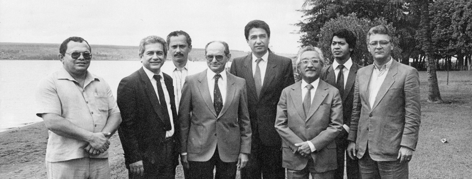

José Carlos Leitão, então presidente da CONORTE, destaca que a escolha da capital no centro geográfico do futuro Estado foi também uma importante conquista da entidade. Em sua obra “Tocantins, Eu Também Criei”, ele apresenta a Carta ao Tocantins:
Em abril de 1982, a CONORTE organizou em Brasília um Congresso de Estudos para reunir dados que comprovassem a viabilidade econômica do futuro Estado do Tocantins. O evento resultou na “Carta de Tocantins”, que destacou pontos essenciais para a causa autonomista.
O documento ressaltou que o norte goiano, com cerca de um milhão de habitantes distribuídos em 53 municípios e uma vasta área, possui recursos naturais abundantes, mas sofre com o desequilíbrio político e econômico devido à negligência das autoridades estaduais.
Desde a época colonial, essa região foi palco de movimentos separatistas que buscavam autonomia para melhorar a administração e o desenvolvimento local. A CONORTE nasceu dessa tradição, com o objetivo de unir a população em torno do ideal autonomista, estudar e propor soluções para os problemas regionais, e ampliar a representatividade política do norte goiano.
O Congresso enfatizou que o progresso da região depende da integração de três pilares: energia, infraestrutura viária e expansão agropecuária. Também destacou a importância de aproveitar as riquezas locais para desenvolver indústrias que gerem empregos e crescimento sustentável. As conclusões foram amplamente divulgadas na região, influenciando a mobilização e fortalecendo a campanha pela autonomia do Tocantins.
